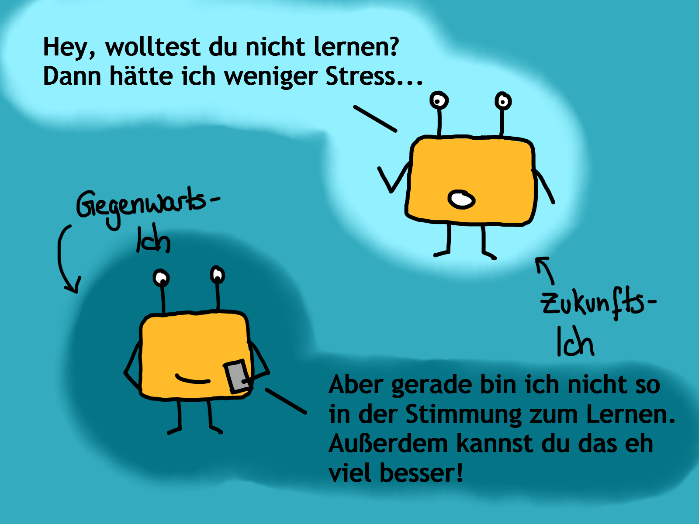

Neuste Blogbeiträge:

Meine Anti-Lockdown-Medizin
02.05.2021
Hier erfahrt ihr, was mich momentan durch den Lockdown bringt und welches die besten Online-Spiele für den nächsten Spieleabend sind.

Den Present Bias austricksen
18.04.2021
Warum wir unser gegenwärtiges Ich dem Ich von morgen vorziehen und wie ihr euch selbst austricksen könnt, es nicht zu tun.

Das Mittagstief-Monster
04.04.2021
Kennt ihr das Mittagstief-Monster? Hier erfahrt ihr, wie ihr mit dem Mittagstief umgeht und es sinnvoll für euch nutzen könnt.
Annimationen:
Hungrige Schildkröte
Bearly awake